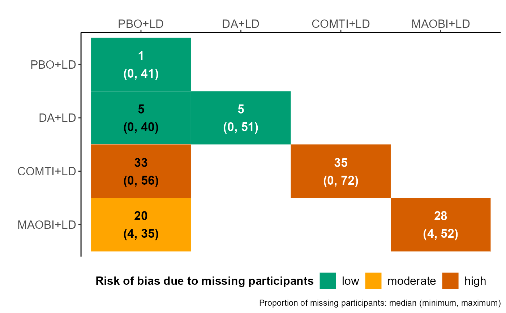

heatmap.missing.network.RdThis function illustrates the distribution of and the risk of bias associated with missing participant outcome data (MOD) for each intervention and observed comparison of the network.
heatmap.missing.network(data, drug.names)
| data | A data-frame of a one-trial-per-row format containing arm-level data of each trial. This format is widely used for BUGS models.
See 'Format' in |
|---|---|
| drug.names | A vector of labels with the name of the interventions in the order they appear in the argument |
A heatmap on the proportion of MOD in each intervention and observed comparison of the network. Each cell presents the median, minimum and maximum (in parenthesis) proportion of MOD across the corresponding trials. The proportion of MOD in each intervention and observed comparison are depicted using white and black colour in the main diagonal and lower off-diagonal, respectively, of the heatmap. First, the proportion of MOD in each trial-arm of the network is calculated to obtain the aforementioned summary statistics for each intervention. Then, the total proportion of MOD in each pairwise comparison of each trial is calculated to obtain the aforementioned summary statistics for each observed comparison of the network. The pairwise comparisons are read from left to right. We used the 'five-and-twenty' rule of Sackett and colleagues to characterise the median proportion of MOD as being associated with low (up to 5%), moderate (more than 5% and up to 20%), and high risk of attrition bias (more than 20%). Low, moderate, and high risk of bias associated with MOD is indicated using green, orange, and red colour, respectively. The function is redundant for a pairwise meta-analysis.
Sackett DL, Richardson WS, Rosenberg WM, Haynes RB. Evidence-based medicine: how to practice and teach EBM. New York: Churchill Livingstone 1997. ISBN: 0-443-05686-2.
Loukia M. Spineli
#> study t1 t2 y1 y2 sd1 sd2 m1 m2 n1 n2 #> 1 DA (B): Interntl 1 2 -0.30 -1.20 4.36 4.32 7 3 83 84 #> 2 DA (C): Spain 1 2 -2.47 -3.33 3.91 3.48 8 9 20 23 #> 3 DA (C): UK 1 2 -0.70 -2.00 2.24 2.33 2 1 18 19 #> 4 DA (C): USA 1 1 2 -0.77 -2.08 3.32 3.21 19 34 65 123 #> 5 DA (Pe): N America 1 2 -0.20 -1.80 4.79 4.81 0 0 187 189 #> 6 DA (Pr): CLEOPATRA 1 2 -0.90 -2.80 5.00 2.83 1 1 101 201# study t1 t2 y1 y2 sd1 sd2 m1 m2 n1 n2 # DA (B): Interntl 1 2 -0.30 -1.20 4.36 4.32 7 3 83 84 # DA (C): Spain 1 2 -2.47 -3.33 3.91 3.48 8 9 20 23 # DA (C): UK 1 2 -0.70 -2.00 2.24 2.33 2 1 18 19 # DA (C): USA 1 1 2 -0.77 -2.08 3.32 3.21 19 34 65 123 # DA (Pe): N America 1 2 -0.20 -1.80 4.79 4.81 0 0 187 189 # DA (Pr): CLEOPATRA 1 2 -0.90 -2.80 5.00 2.83 1 1 101 201 # The names of the interventions in the order they appear in the dataset interv.names <- c("PBO+LD", "DA+LD", "COMTI+LD", "MAOBI+LD") # Create the heatmap heatmap.missing.network(data = nma.stowe2011, drug.names = interv.names)